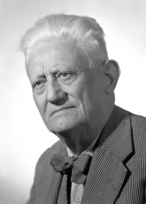

Alla fine della Seconda guerra mondiale, le forze politiche italiane si riunirono per
riorganizzare l’assetto politico-istituzionale dell’Italia.
Il 2 giugno 1946 ebbe luogo il referendum, per dare al popolo la possibilità di
scegliere fra monarchia e repubblica e per eleggere anche i rappresentanti
dell’Assemblea Costituente. Il principale compito dell’Assemblea era quello di
scrivere una nuova Costituzione per l’Italia, visto che lo Statuto albertino era stato
compromesso con pesanti modifiche dal Partito Fascista.
I voti validi in favore della repubblica furono circa due milioni in più di quelli validi
per la monarchia.
Il 15 luglio 1946, tra i 556 eletti dell’Assemblea Costituente, venne istituita la
Commissione dei 75 con il compito di redigere la Costituzione repubblicana, da
sottoporre alla stessa Assemblea una volta terminati i lavori.
La Commissione dei settantacinque procedette nei suoi lavori articolandosi in tre
sottocommissioni.
La prima sottocommissione, presieduta da Umberto Tupini, si occupò dei “Diritti e
doveri dei cittadini”; la seconda, presieduta da Umberto Terracini, si occupò dell’
“Ordinamento costituzionale della Repubblica”; infine, la terza, presieduta da
Gustavo Ghidini, si occupò dei “Rapporti economici e sociali”.
Le Sottocommissioni lavorarono separatamente in base alle competenze
assegnate e successivamente presentarono i testi elaborati alla Commissione dei
Settantacinque.
Nella seduta antimeridiana del 22 dicembre l'Assemblea Costituente prese in
esame il testo definitivo e votò.
La Costituzione fu approvata con votazione complessiva e finale nella seduta
pomeridiana dello stesso 22 dicembre, venne promulgata il 27 dicembre ed entrò
in vigore il 1° gennaio 1948.
Sono considerati PADRI FONDATORI della nostra Costituzione 5 componenti della
Commissione:
-
Giuseppe Saragat (politico e diplomatico italiano, quinto Presidente della Repubblica Italiana e primo socialdemocratico)

-
Umberto Terracini
(politico e antifascista, presidente dell'Assemblea costituente e dirigente del Partito Comunista Italiano)
-
Meuccio Ruini
(presidente del Senato e senatore a vita ed ex Ministro delle colonie del Regno d'Italia)
-
Umberto Tupini
(avvocato, ministro e sindaco di Roma, membro dell'Assemblea Costituente e senatore della Repubblica per 4 legislature)
-
Gustavo Ghidini
(membro del Partito Socialista Italiano, laureato in giurisprudenza si dedicò alla professione forense)

FONTI:
wikipedia
Fondata sul lavoro (Senato.it)